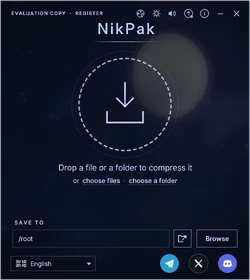
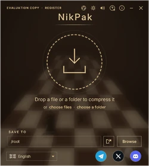
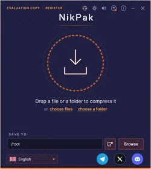

Features
What is inside NikPak and the .nik format, explained plainly.
Quantum resistance
Quantum computers threaten public-key cryptography: Shor's algorithm breaks RSA and elliptic curves. NikPak uses none of them. Its encryption is 256-bit symmetric only, which keeps about 128 bits of security even against Grover's algorithm.
Archives captured today cannot simply be decrypted later by a quantum computer ("harvest now, decrypt later"). The strength of your password still matters most, and Argon2id makes guessing it expensive.
Media intelligence
NikPak looks at what a file contains, not at its extension. WAV and AIFF audio, ProTracker MOD music and BMP images are recognised and sent through filters made for them.
Every media file goes through a trial: NAC, Shuffle, Shuffle+Delta and MED are tried and the smallest result is kept. When no filter helps, the file is compressed normally, so a filter never makes an archive bigger.
- NAC, NikPak's lossless audio codec: linear prediction and stereo decorrelation, on par with FLAC -8.
- Self-verification: every NAC block is decoded again during compression and compared with the original.
- Shuffle and Shuffle+Delta for samples and pixels, and a dedicated path for ProTracker MOD files.
- Results against RAR 7 -m5: BMP photographs 38.8 % smaller, stereo music 14.6 %, MOD files 13.3 %.
Office documents, PDF and gzip
docx, xlsx, pptx, odt, ods, epub, jar, zip, pdf and gz files hide their content in Deflate streams that ordinary compressors cannot shrink any more. At levels -m4 and -m5 NikPak decodes these streams, compresses the plain data far better and rebuilds the original file bit for bit when you extract. On 60 office files the archive is 31.7 % smaller than with 7-Zip -mx9.
Compression levels
Levels -m1 to -m4 use a multi-threaded, solid Zstandard stream, with a 128 MiB window and long-distance matching at -m4. The maximum level -m5, the default, builds a multi-engine body: LZMA2 for binary data and PPMd for text, chosen by trial, with files sorted by type. Since 1.13 the blocks of a -m5 archive are compressed in parallel, one per core.
| Level | What it does |
|---|---|
-m0 | Store: no compression |
-m1 | Fastest |
-m2 | Fast: the choice when speed matters more than size |
-m3 | Good |
-m4 | High: adds Deflate recompression for office files, PDF and gzip |
-m5 | Maximum, the default: LZMA2 and PPMd chosen by trial |
Split volumes and self-extracting .exe
An archive can be cut into volumes of any size — 100 MB, 700 MB, 4.7 GB, or a number of bytes — for discs and upload limits. The first volume is photos.nik, the next photos.n01, photos.n02 and so on. To unpack, extract the first volume: NikPak reads the others by itself.
With -sfx the archive becomes photos.exe — unNik with the archive appended. Whoever runs it gets a small window that asks where to unpack and does it, with no installation and no NikPak needed. -v and -sfx together give a self-extracting .exe plus the following volumes. Both are for registered copies.


Every core counts
At the maximum level the archive is cut into balanced blocks — one per core, never smaller than 8 MiB — and each block is compressed on its own thread at the same time. Reading files, trying the media filters and recompressing office files and PDFs also run in a pipeline at every level. -mt<N> sets the number of threads (2 for the best ratio, 8 for speed); NIKPAK_SEQ=1 restores the one-at-a-time path.
Packages
Create Package packs files into an encrypted .nik package with a name, a description, a square cover and a licence (EULA) to approve — the NikPak twin of a Nikkosynth soundbank. Drop a package on the window or open it in unNik: a box shows the cover and the description, asks for the password and the approval, then extracts it. Packages are always encrypted.

Encryption
Encrypted archives use Argon2id to turn the password into a key. It needs 64 MiB of memory for every guess, which makes password guessing on graphics cards expensive. The data is then encrypted with XChaCha20-Poly1305 in authenticated chunks of 64 KiB.
- File names, sizes, dates and permissions are always encrypted.
- Reordering, truncation and header changes are detected cryptographically.
- No password given? NikPak generates a strong one: 24 characters, about 139 bits.
- There is no back door: a lost password cannot be recovered by anyone.
| NikPak | RAR 5 | 7-Zip | |
|---|---|---|---|
| Cipher | XChaCha20-Poly1305 | AES-256-CBC | AES-256 |
| Authenticated | Yes | No | No |
| Password hashing | Argon2id, memory-hard | PBKDF2-HMAC-SHA256 | SHA-256, not memory-hard |
| File names hidden | Always | Only with -hp | Only with -mhe |
Safe by design
- Extraction never writes outside the destination folder (zip-slip protection).
- Symbolic links are refused and setuid bits are removed.
- Every decoder has strict limits: a malicious archive cannot exhaust memory.
- Archives are written atomically: a failed run never leaves a half-written file.
- CRC32 of every file, an end marker with the entry count, and a program written in memory-safe Rust.
Two programs, one look
NikPak creates archives from a single drop window; unNik opens, browses and extracts them. Both share the language, the sounds and the settings, and one button switches from one to the other.


Command line
NikPak follows the RAR command syntax (a, x, e, l, v, lb, t, p, d, mt) with RAR and zip-style options, predictable exit codes and a -help that documents every option. The password can come from an environment variable, and front-ends such as Total Commander can drive it like rar.exe. Technical →
Skins
89 skins for NikPak and unNik: the 75 of Nikkomander plus 14 painted ones of our own. The choice is saved and shared by both programs, and you can import your own .skin.json skins. See all skins →
")







Where RAR is still ahead
- Recovery records that can repair a damaged archive
- Adding or replacing files inside an existing archive
- Decades of field testing and millions of existing .rar files
Roadmap
- Recovery records: Reed-Solomon parity to repair damaged archives.
- Updates: adding and replacing files inside an existing archive.
- Sharing with public keys: a hybrid of X25519 and ML-KEM, safe if either one holds.
- More media filters: floating-point audio, XM/S3M/IT trackers, PNG recompression, TGA and TIFF.
- ZIP and RAR in unNik: unpack the common formats in unNik, so that NikPak can be the only archiver you need. (The file-manager menu shipped in 1.5.5.)
- A faster maximum level: parallel LZMA2/PPMd within a single file, deduplication, a filter for executables.
- An external security review of the cryptography and the extractor.